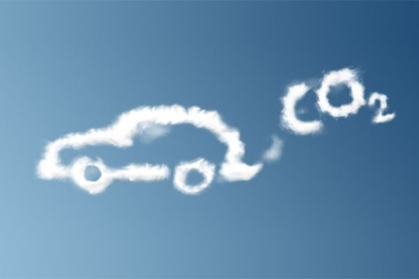

BlablaCar présente le covoiturage comme l'un des leviers les plus efficaces pour réduire l'empreinte carbone du transport routier. Chaque année, l'entreprise publie une Déclaration de Performance Extra-Financière (DPEF) La DPEF est un rapport annuel détaillant l'impact environnemental et social d'une entreprise, obligatoire pour les grandes sociétés. détaillant son impact environnemental, auditée par Deloitte & Associés.
| CO2 évité en 2024 | 2,5 millions de tonnes (+25% vs 2023) |
|---|---|
| CO2 évité cumulé (5 ans) | 9 millions de tonnes |
| Sièges vides remplis en 2024 | plus de 70 millions |
| Passagers transportés en 2024 | 92 millions (+15% vs 2023) |
| Économies réalisées par les covoitureurs | 540 millions d'euros en 2024 |

BlaBlaCar ne communique pas seulement sur le CO2 évité : l'entreprise publie aussi sa propre empreinte carbone, Scope 3 inclus Le Scope 3 regroupe toutes les émissions indirectes liées à l'activité d'une entreprise, y compris celles de ses partenaires et utilisateurs. , estimée à environ 2,7 millions de tonnes de CO2. Elle met en avant que les émissions évitées grâce à la plateforme sont 12 fois supérieures à cette empreinte propre, un ratio rarement communiqué par les entreprises du secteur.
Les objectifs de réduction des Scopes 1 et 2 ont déjà été atteints, avec 6 ans d'avance sur l'échéance fixée à 2030. En 2024, 5% du réseau BlaBlaCar Bus fonctionnait aux biocarburants, avec un objectif de 10% en 2025. La performance environnementale fait l'objet d'un suivi annuel via la DPEF.

Les chiffres publiés par BlaBlaCar suivent les recommandations du GHG Protocol Le GHG Protocol est un standard international de référence pour la comptabilisation des émissions de gaz à effet de serre. et de l' ADEME L'ADEME est l'Agence de la transition écologique, un organisme public français. . Le calcul des émissions évitées prend en compte l'effet rebond, les détours liés au covoiturage et une analyse du cycle de vie complet, plutôt qu'un simple cumul des kilomètres partagés.
Au final, BlaBlaCar s'appuie sur une méthodologie certifiée et auditée par Deloitte & Associés pour démontrer que le covoiturage reste, chiffres à l'appui, l'un des moyens les plus efficaces de réduire l'empreinte carbone du transport routier.